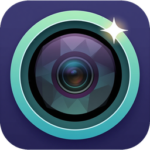

Let the words travel.
Add live captions or translate what you say. Local Whisper and translation models do the work on your Mac.

AI CameraMADE FOR MACOS · 0.2.0 EARLY ALPHA
Captions, translation, and a voice agent.
Right in the camera feed you already share.
macOS 14+ · Apple Silicon & Intel · Free & open source
很高兴见到大家。
Add live captions or translate what you say. Local Whisper and translation models do the work on your Mac.
Ask a question while you’re on a call. Start a voice conversation with a victory gesture, a shortcut, or a click.
Mute, pause captions, or switch off gestures from a quiet menu-bar toolbar. Open a larger preview when you need it.
A FAMILIAR CAMERA. A FEW NEW TRICKS.
Start with a normal camera feed.
Turn on only the features you want.
Open the installer, then launch the app from Applications.
Follow the camera and microphone setup inside the app, including macOS permission prompts.
Enable captions, translation, or the agent in Settings. Download local models when you’re ready.
Local models process on your Mac. AI Camera does not record raw camera or microphone media. Optional OpenAI features send microphone audio to OpenAI when enabled; the supported conversation setup does not upload camera frames.
Read about privacy